Priestranný 4i rodinný dom s garážou a komfortnou spálňou – Dolná Krupá, časť Potôčky
Dolná Krupá
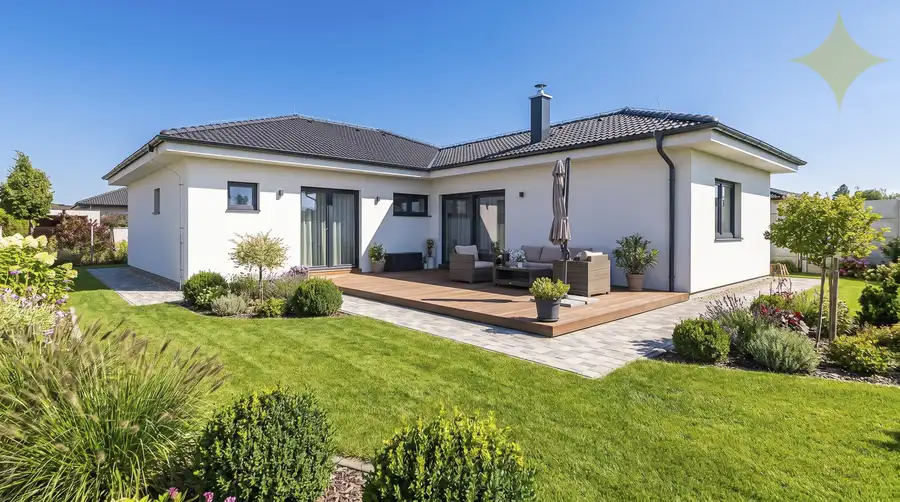
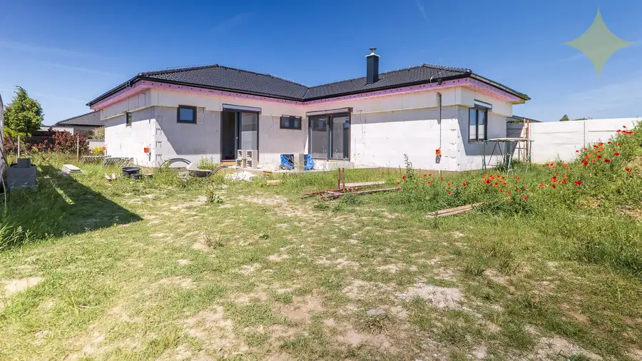
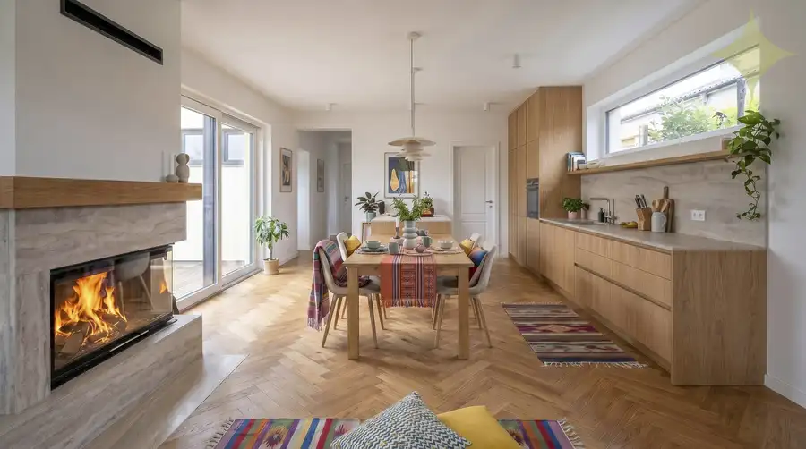
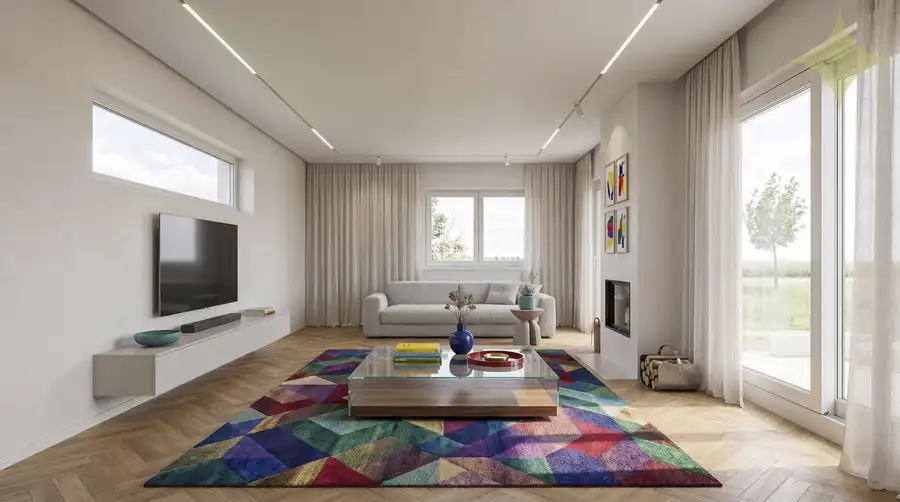
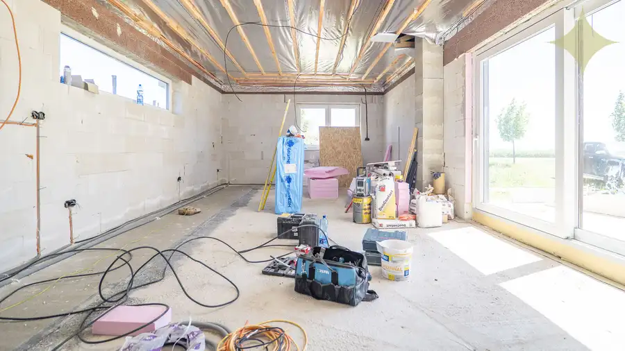
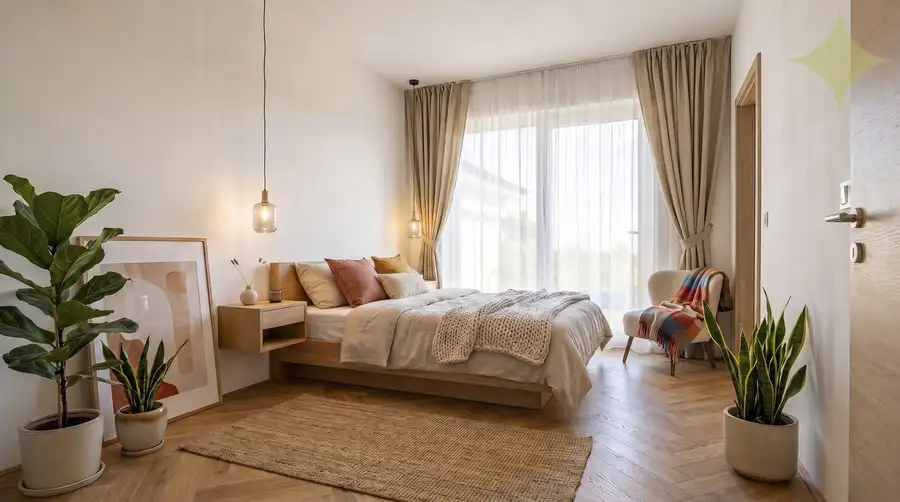
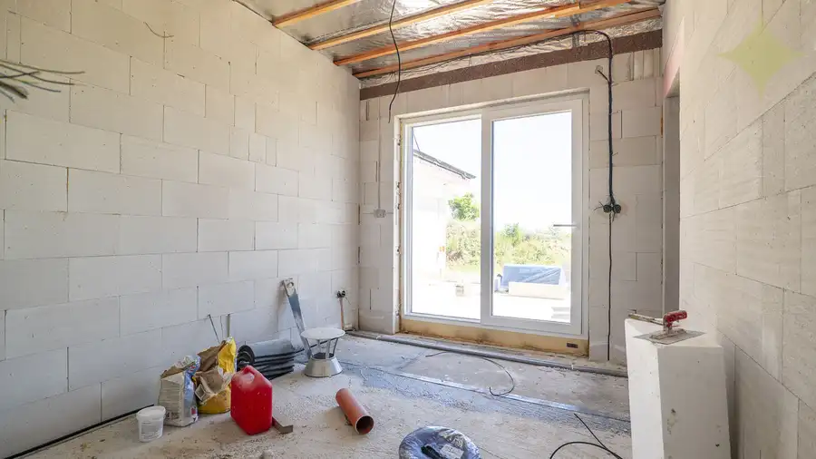
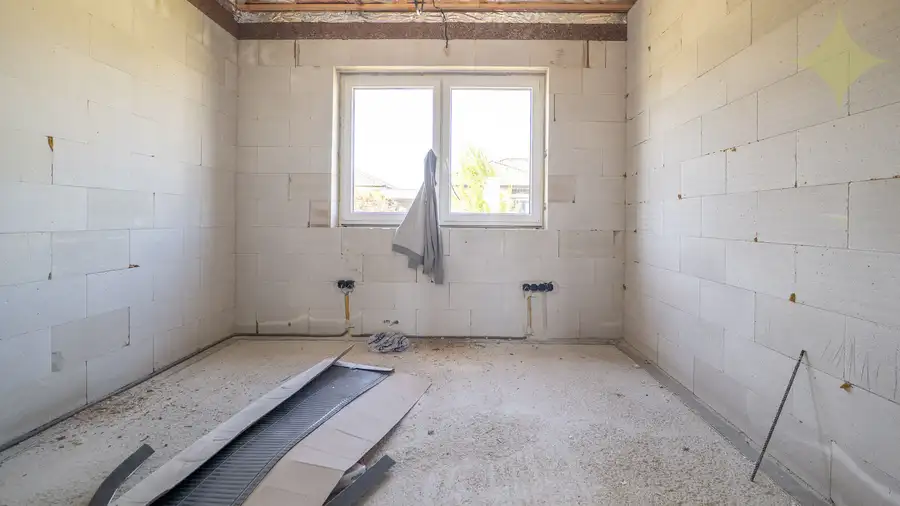
- Plocha145 m²
- StavVo výstavbe
- VlastníctvoOsobné
O nehnuteľnosti
Ponúkame na predaj novostavbu samostatne stojaceho 4-izbového rodinného domu s integrovanou garážou, nachádzajúcu sa v modernej a obľúbenej lokalite Potôčky v obci Dolná Krupá, len pár minút od Trnavy. Pripravili sme si pre Vás aj videoprehliadku domu. Otvorte si prosím v prehliadači nasledujúci link: https://youtu.be/ul4SHH1hNNsDom s premyslenou dispozíciou v tvare „L“ poskytuje ideálne súkromie na terase a hľadá svojho nového majiteľa, ktorý si ho dokončí podľa vlastných predstáv.Najväčší benefit domu: Nadštandardná rodičovská zóna (komfortná spálňa)Na rozdiel od väčšiny bežných novostavieb tento dom ponúka luxusné riešenie pre rodičov. Hlavná spálňa disponuje vlastným murovaným šatníkom a privátnou kúpeľňou prístupnou priamo zo spálne. Táto nočná časť je tak kompletne oddelená od denného ruchu a detských izieb, čo zabezpečuje maximálne súkromie a komfort.Nehnuteľnosť sa predáva v štádiu holodom, čo vám umožňuje vybrať si finálne materiály (podlahy, sanitu, dvere) presne podľa vášho vkusu. Veľkou výhodou kúpy v súčasnom štádiu je možnosť prispôsobiť si elektrické rozvody a osadenie vypínačov či zásuviek kompletne podľa vašich individuálnych potrieb a budúcich plánov zariadenia.Základné parametre:Plocha pozemku: 499 m² (rovinatý, slnečný pozemok)Zastavaná plocha domu: cca 182 m²Úžitková plocha domu: 145 m²Počet izieb: 4 + integrovaná garážTechnický stav a materiály:Konštrukcia: Presná tvárnica Ytong s hrúbkou 300 mm + kvalitné zateplenie polystyrénom s hrúbkou 200 mm (výborné tepelnoizolačné vlastnosti).Strecha: Väzníková konštrukcia s odolnou betónovou strešnou krytinou.Okná: Plastové s izolačným trojsklom a elegantnou jednostrannou lamináciou (exteriérová farba antracit).Vykurovanie a chladenie: Moderné podlahové vodné kúrenie napojené na efektívne tepelné čerpadlo (bude kompletne osadené v cene).Príprava na krb: V obývacej izbe sa nachádza kvalitný komínový systém Schiedel, pripravený na napojenie krbovej vložky alebo kachlí.Inžinierske sietí: Dom je napojený na obecný vodovod, kanalizáciu a elektriku. Plyn sa nachádza na hranici pozemku (do domu nie je zavedený).Čo zahŕňa štádium holodom pri odovzdaní?Dom bude odovzdaný s dokončenými omietkami, kompletne vymaľovaný na bielo, s osadeným a funkčným tepelným čerpadlom a pripravenou poistkovou rozvodnou skriňou. Nezahŕňa finálne nášľapné vrstvy (podlahy, dlažby), obklady, sanitu, interiérové dvere, vypínače, zásuvky, svietidlá a zariadenie domu.Dispozičné riešenie podľa projektovej dokumentácie:- Zastrešené závetrie, vstupné zádverie, chodba s priestorom na šatníkovú skriňu a s priamym, suchým prechodom do garáže.- Priestranná integrovaná garáž (6,7 m x 2,85 m) pre jedno vozidlo.- Dominantou domu je veľkorysá, otvorená denná časť (takmer 40 m²) spájajúca obývaciu izbu, jedáleň a kuchyňu s presklenou stenou a výstupom na chránenú terasu.- Praktická technická miestnosť (pre tepelné čerpadlo/práčovňu) a samostatná komora/špajza hneď vedľa kuchyne.- Nočná časť (oddelená chodbou)- Hlavná kúpelňa s vaňou, sprchovým kútom, umývadlom a toaletou.- Komfortná spálňa rodičov, z ktorej sa priamo vchádza do vlastného murovaného šatníka a do veľkej privátnej kúpeľne (navrhnutej pre sprchový kút, umývadlo a toaletu).- Dve zrkadlovo orientované, presvetlené detské izby (každá s dĺžkou 3,7 m).- Druhá, samostatná toaleta s umývadlom, umiestnená na chodbe (ideálna pre návštevy).- Samostatný praktický sklad / šatník prístupný z chodby.Lokalita:Časť Potôčky v Dolnej Krupej patrí medzi najvyhľadávanejšie satelitné lokality v okolí Trnavy. Ponúka modernú infraštruktúru, pokojné bývanie v bezprostrednom dotyku s prírodou a skvelou komunitou. Dostupnosť do Trnavy je autom len cca 5-7 minút, k dispozícii je aj prímestská doprava. Kompletná občianska vybavenosť sa nachádza v centre obce Dolná Krupá.Cena v štádiu holodom: 350 000,- €Energetický certifikát nebol predložený.Pre viac informácií alebo dohodnutie obhliadky ma neváhajte kontaktovať na tel. čísle 0903 425 347, Ing. Martin Sklenármail: martin.sklenar@premiumliving.sk
Parametre
- Druh
- Rodinný dom
- Druh domu
- Klasický dom
- Dátum zverejnenia
- 14. 06. 2026
- Energetický certifikát budovy
- nie je
- Plocha pozemku
- 499 m²
- Počet garáží
- 1
- Počet nadzemných podlaží
- 1
- Stav nehnuteľnosti
- Vo výstavbe
- Terén pozemku
- Iný
- Typ
- Predaj
- Typ konštrukcie
- Bloková konštrukcia
- Vlastníctvo
- Osobné
- Vybavenie
- Garáž
- Zariadenie
- Holopriestor
- Zastavaná plocha
- 182 m²
- Úžitková plocha
- 145 m²
Kde to je


Mohlo by Vás zaujímať
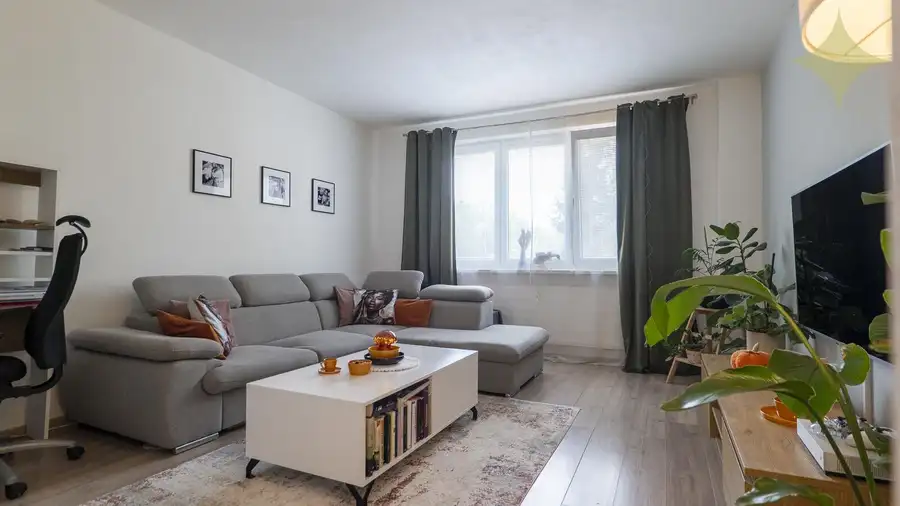
BytNové 165 000 €3-izbový prerobený byt s loggiou | na Hôrke, Nitra – diely Nitra 3-izbový61.4 m²2. podlažie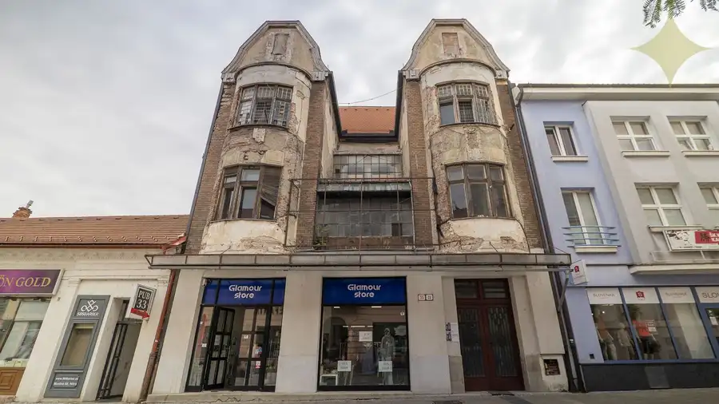
Komerčné priestoryNové 735 000 €Historický Vežičkový dom v centre Nitry – príležitosť vrátiť život jednej z výrazných budov mesta Nitra 803 m²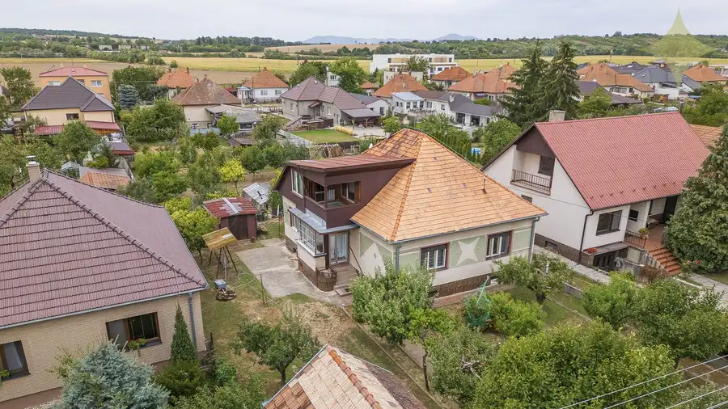
DomNové 147 000 €Rodinný dom s veľkým potenciálom | Vráble – Horný Ohaj | pozemok 1 251 m² Vráble 205 m²